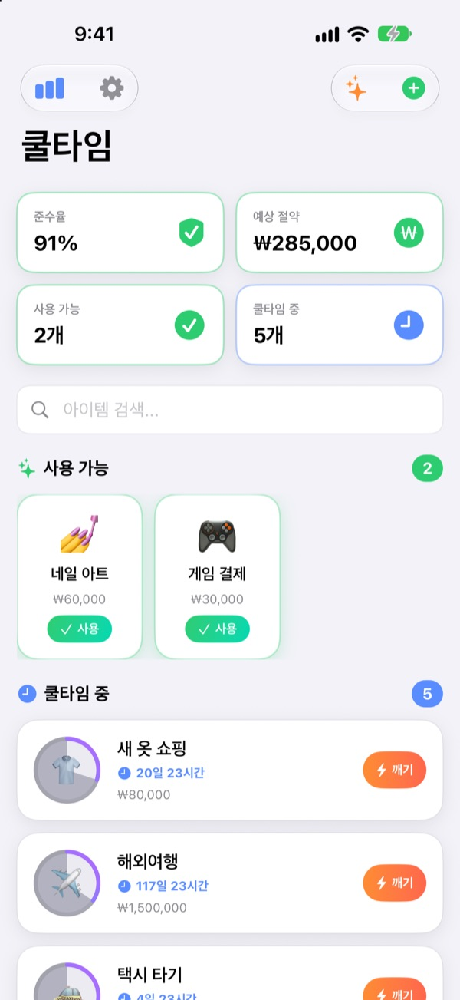
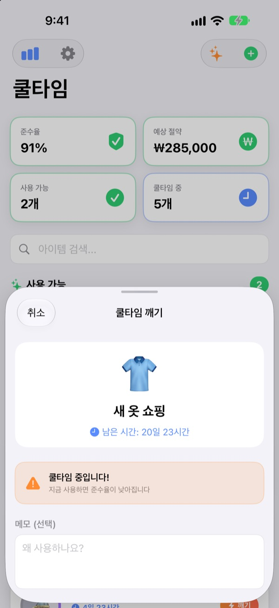
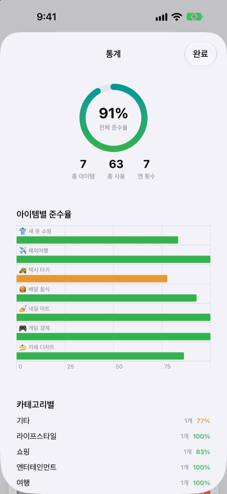
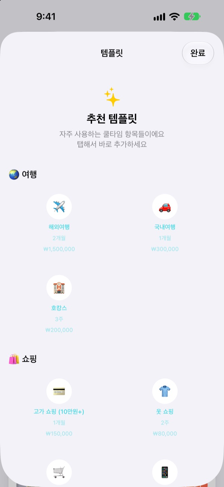

지르고 싶을 땐
쿨타임부터
게임 스킬처럼 소비에도 기다리는 시간을 걸어 두세요. 쓰고 나면 원이 비고, 다시 써도 될 때까지 천천히 차올라요.
모든 기능이 무료예요. 계정도 광고도 없어요.

직접 써 보세요
아이템을 고르고 사용하기를 누른 다음, 하루씩 시간을 보내 보세요. 쿨타임 중에 쓰면 어떻게 되는지도 볼 수 있어요.
"이번 한 번만"이 일주일에 네 번이었던 적 있나요?
배달 앱을 열 때마다 이번만이라고 생각하지만, 지난번이 언제였는지는 잘 기억나지 않아요. 쿨타임은 마지막으로 쓴 때와 다시 써도 되는 때를 보여 줘서, 참을지 말지를 그때 기분이 아니라 미리 정해 둔 규칙으로 고르게 해 줘요.
깨기 전에 한 번 더 물어봐요
쿨타임 중에 쓰려고 하면 남은 시간과 함께 준수율이 내려간다고 알려 줘요.
그래도 써야 한다면 왜 썼는지 메모와 실제 비용을 남길 수 있어요. 깬 기록도 그대로 남아요.

참은 만큼 숫자로 보여요
쿨타임을 지킨 비율인 준수율, 아이템별·카테고리별 기록, 깬 횟수를 한 화면에서 봐요.
예상 비용을 넣어 둔 아이템은 이번 달에 아낀 금액도 어림해서 보여 줘요.

자주 거는 쿨타임은 탭 한 번으로
여행, 쇼핑, 음식부터 건강, 금융까지 추천 템플릿에서 골라 바로 더해요.
쿨타임이 절반 지났을 때와 끝났을 때 알림이 오고, 홈 화면과 잠금 화면 위젯에서 남은 시간을 바로 볼 수 있어요.

시작은 세 단계면 돼요
- 1
아이템을 만들어요
이름과 이모지, 기다릴 시간(시간·일·주·개월)을 정하거나 추천 템플릿에서 골라요.
- 2
쓸 때 사용하기를 눌러요
그 순간부터 쿨타임이 시작되고 원이 비어요.
- 3
알림이 오면 다시 써요
끝나면 알림으로 알려 줘요. 처음 한 번만 알림을 허용해 주세요.
추천 템플릿에 있는 쿨타임
- 🌏 여행
- 해외여행 · 국내여행 · 호캉스
- 🛍️ 쇼핑
- 옷 쇼핑 · 충동구매 · 전자기기
- 🍔 음식
- 패스트푸드 · 배달음식 · 카페 · 디저트 · 외식 · 야식
- 🎮 엔터테인먼트
- 게임 과금 · 영화관 · 넷플릭스 빈지워칭 · 콘서트/공연
- 💅 라이프스타일
- 술 마시기 · 택시 · 네일아트 · 미용실 · 마사지/스파
- 🏃 건강
- 휴식의 날 (운동 스킵) · 치팅데이
- 💰 금융
- 주식 매매 · 로또
템플릿마다 알맞은 주기와 예상 비용이 미리 들어 있어요. 원하는 게 없으면 직접 만들면 돼요.
자주 묻는 질문
쿨타임 중에 써 버렸어요.
써도 돼요. 사용 기록에 쿨타임 중에 썼다는 표시가 남고, 쿨타임은 그때부터 다시 시작돼요. 통계의 준수율과 깬 횟수에도 반영돼요.
절약 금액은 어떻게 계산하나요?
아이템에 예상 비용을 넣어 두면, 이번 달에 쿨타임 덕분에 덜 쓴 횟수를 어림해 아낀 금액을 보여 줘요. 정확한 금액이 아니라 추정치이고, 예상 비용을 비워 둔 아이템은 계산에서 빠져요.
알림이 오지 않아요.
iPhone의 설정 > 알림 > 쿨타임에서 알림이 켜져 있는지 확인해 주세요. 앱 첫 화면에 알림이 꺼져 있다는 안내가 보이면, 거기 있는 설정 버튼으로 바로 갈 수 있어요.
위젯은 어떻게 추가하나요?
홈 화면을 길게 누르고 왼쪽 위의 +를 누른 다음 쿨타임을 찾아 추가하세요. 잠금 화면 위젯도 있어요. 지금 쓸 수 있는 아이템과 남은 시간을 보여 줘요.
기록을 지우고 싶어요.
아이템을 삭제하면 그 아이템의 기록도 함께 지워져요. 앱을 삭제하면 모든 기록이 사라져요. 기록은 기기 안에만 있어서 지운 기록은 되살릴 수 없어요.
다른 기기와 동기화되나요?
아직은 안 돼요. 기록은 지금 쓰는 iPhone 하나에만 있어요. 기기 간 동기화와 백업은 앱의 설정 > 앞으로 만들 기능에 올라 있어요.
정말 무료인가요?
네. 결제해야 열리는 기능이 없어요. 앱이 마음에 들면 설정에서 개발자에게 팁을 보낼 수 있지만, 보내지 않아도 달라지는 건 없어요.
제 기록이 어딘가로 보내지나요?
아니요. 계정도 광고도 없고, 쿨타임과 사용 기록은 iPhone 안에만 저장돼요. 개발자에게 가는 것은 익명 사용 통계와 오류 보고, 직접 보낸 피드백뿐이에요. 자세한 내용은 아래 개인정보 처리방침에 있어요.
버그를 찾았거나 바라는 기능이 있어요.
앱의 설정 > 지원 > 피드백 보내기, 인스타그램 DM @lee25_ios, 또는 아래 메일로 편하게 알려 주세요. 막힌 화면이 있었다면 어떤 상황이었는지와 iOS 버전을 함께 적어 주시면 훨씬 빨리 찾을 수 있어요.
궁금한 점이나 의견은 leeo@kakao.com로 보내 주세요.